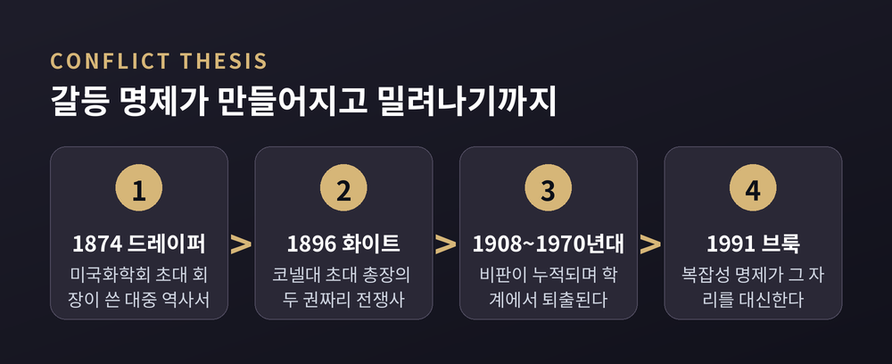
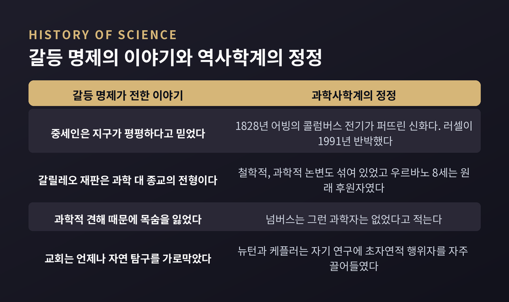
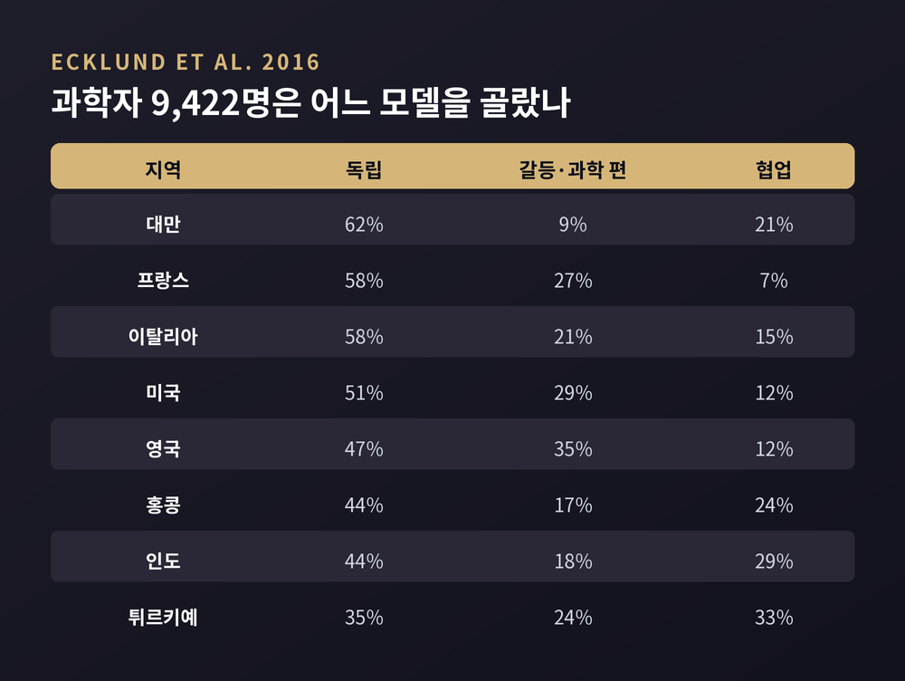

이언 바버의 갈등·독립·대화·통합 유형론으로 읽는 논쟁의 지형
이번 글에서는 과학과 종교의 관계를 설명해온 네 가지 모델을 정리해 보겠습니다. 물리학자이자 신학자였던 이언 바버가 제시한 갈등·독립·대화·통합의 분류입니다. 어느 쪽이 옳은지 판정하는 글이 아니라, 각 모델이 어떤 논리 위에 서 있고 어떤 반박을 받아왔는지 따라가 보는 글입니다.
세 줄 요약
이언 그레이엄 바버는 1923년에 태어나 2013년에 세상을 떠났습니다. 물리학 박사 학위와 신학 학위를 함께 지녔고, 미국 칼턴 칼리지에서 가르쳤습니다. 1999년에 템플턴상을 받았습니다.
출발점은 1966년입니다. 그해 그는 『Issues in Science and Religion』을 냈습니다. 스탠퍼드 철학백과는 이 책이 "양쪽 분야의 방법론과 이론을 비교하는 일을 포함해, 이 분야의 지속적인 주제들을 설정했다"고 평가합니다. 공교롭게도 같은 해에 이 분야 최초의 전문 학술지 『Zygon』이 창간되었습니다.
네 가지 이름이 등장한 것은 그보다 뒤입니다. 바버는 1989년부터 1991년까지 스코틀랜드 애버딘에서 기퍼드 강연을 맡았습니다. 첫 시리즈가 1990년 『Religion in an Age of Science』로 묶이면서 갈등·독립·대화·통합의 4분법이 제시되었습니다. 이후 1997년 개정판을 거쳐, 2000년 『When Science Meets Religion』에서 오늘날 가장 널리 인용되는 형태로 정리됩니다.
발표 시점을 두고는 자료마다 강조점이 조금 다릅니다. 기퍼드 강연 아카이브는 1990년 책을 가리키고, 스탠퍼드 철학백과는 2000년 책을 전거로 답니다. 한 해를 못박기보다 30년에 걸친 다듬기의 결과로 보는 편이 정확하겠습니다.
갈등 모델은 과학과 종교가 항구적으로, 그리고 원리적으로 대립한다고 봅니다. 스탠퍼드 철학백과는 이 모델이 두 개의 역사 서사에 크게 기대고 있다고 지적합니다. 갈릴레오 재판과 다윈주의의 수용입니다.
흥미로운 지점은 바버가 이 모델의 대표자로 누구를 꼽았느냐입니다. 그는 과학적 유물론자와 종교적 문자주의자를 나란히 세웁니다. 양쪽 모두 "과학과 신학이 같은 영역, 곧 자연의 역사에 대해 경쟁하는 문자적 진술을 한다"고 전제하기 때문입니다. 그래서 둘 중 하나를 골라야 한다는 결론에 이릅니다.
갈등 모델은 무신론 진영만의 것이 아닙니다. 전제를 공유하는 한, 서로 반대편에 선 두 진영이 같은 지도를 들고 있는 셈입니다.
대중의 머릿속에 있는 '과학 대 종교의 전쟁'이라는 그림에는 이름이 있습니다. 과학사학계는 이를 갈등 명제, 또는 드레이퍼-화이트 명제라고 부릅니다.
출처는 두 권입니다. 존 윌리엄 드레이퍼가 1874년에 『종교와 과학의 갈등사』를, 앤드루 딕슨 화이트가 22년 뒤인 1896년에 두 권짜리 『기독교권에서 신학과 벌인 과학의 전쟁사』를 냈습니다.
두 사람은 직업 역사가가 아니었습니다. 존스홉킨스대 과학사 교수 로런스 프린시피의 설명에 따르면, 드레이퍼는 1830년대에 미국으로 건너온 영국 이민자이자 미국화학회 초대 회장이었고, 아마추어 역사가였습니다. 화이트는 뉴욕주 상원의원이자 코넬 대학교 초대 총장이었습니다.
집필 동기도 순수한 학문적 호기심은 아니었습니다. 프린시피는 "두 책의 추동력은 딱히 역사적인 것이 아니며, 당대의 정치·사회적 사건에 뿌리를 두고 있다"고 말합니다. 화이트 본인은 코넬을 무종파 기관으로 세운 데 대한 교파 측 공격에 반발했다고 밝혔습니다. 그러나 프린시피는 그 공격의 실체를 특정하기 어렵고, 표면을 긁어보면 연방 예산을 둘러싼 정치적 다툼이 보인다고 지적합니다.
메시아 칼리지의 과학사 교수 에드워드 데이비스는 한 걸음 더 들어갑니다. 화이트는 당시 코넬 측에 반대자들이 기억할 교훈을 주겠다고 말했고, 기존 교파계 대학을 '후진적'으로 자기 생각을 '진보적'으로 칠하는 캠페인에 나섰다는 것입니다. 드레이퍼의 의제는 조금 달랐습니다. 데이비스는 그가 "단지 가톨릭 교회의 권력 남용을 고발하고 싶어 했을 뿐"이라고 봅니다.
배경에는 직업화의 문제도 있었습니다. '과학자'라는 단어는 1834년에야 윌리엄 휴얼이 표준화한 말입니다. 프린시피는 두 사람이 과학의 전문직화 과정의 일부였으며, 과학을 하는 사람을 위한 사회적·정치적 자리를 만들어내는 중이었다고 설명합니다.

프린시피의 평가는 냉정합니다. "이 책들의 문제는 형편없는 역사라는 점입니다. 역사적 사실이라고 부르기도 관대할 그 내용들은, 영구적 전쟁이라는 저자들의 주장을 밀어붙이기 위해 취사선택되거나 뒤틀리고 맥락에서 떼어졌습니다."
구체적인 사례를 보면 이해가 빠릅니다.
첫째, 중세인이 지구가 평평하다고 믿었다는 이야기입니다. 기원전 3세기 이후 서구에서 이를 믿은 교육받은 사람은 극히 예외적입니다. 이 신화를 퍼뜨린 것은 1828년 워싱턴 어빙의 콜럼버스 전기, 그리고 드레이퍼와 화이트의 부정확한 역사서였습니다. 역사가 제프리 버턴 러셀은 1991년 『Inventing the Flat Earth』에서 이를 체계적으로 반박했습니다. 살라망카 위원회가 콜럼버스와 실제로 다툰 쟁점은 지구의 모양이 아니라 유럽과 일본 사이의 거리 추정치였습니다.
둘째, 갈릴레오 재판의 단순화입니다. 갈릴레오 연구자 모리스 피노키아로는 코페르니쿠스 체계에 대한 반대에 신학적 논변만이 아니라 철학적·과학적 논변도 섞여 있었다고 정리합니다. 교황 우르바노 8세는 원래 갈릴레오의 후원자였고, 지동설을 이단이라기보다 천문 계산에는 유용하되 경솔한 교설로 보았을 가능성이 있습니다.
셋째, 순교자 서사입니다. 로널드 넘버스는 2009년 『Galileo Goes to Jail』에서 25명의 기고자를 대표해 이렇게 적습니다. "우리가 아는 한, 과학적 견해 때문에 목숨을 잃은 과학자는 없었다."
반대 방향의 사실도 많습니다. 뉴턴, 케플러, 훅, 보일 같은 자연철학자들은 자기 연구 안에서 초자연적 행위자를 자주 끌어들였습니다. 1277년 파리 금령은 아리스토텔레스 자연학의 일부를 금지했지만, 결과적으로 고대 그리스 자연철학 너머를 사유할 공간을 열었다는 해석도 있습니다. 1864년 토머스 헉슬리가 세운 X-club은 종교적 교리에서 자유로운 과학을 표방했으나, 아마추어 성직자 과학자들과의 경쟁을 정리하려는 직업적 동기도 함께 작동했습니다.
같은 이론에 대한 반응이 나라마다 달랐다는 점도 중요합니다. 19세기 말에서 20세기 초 영국에서는 과학자와 성직자, 대중 저술가들이 이른바 모더니스트로서 화해를 시도했습니다. 같은 시기 미국에서는 진화론에 대한 근본주의적 반대가 자라났고, 1925년 스코프스 재판으로 터져 나왔습니다.
비판은 최근의 일도 아닙니다. 의학사가 제임스 조지프 월시는 이미 1908년에 화이트를 반역사적이라고 비판했습니다. 이후 1950년대부터 수정과 거부가 누적되었고, 1974년 프랭크 터너의 저작과 1979년 제임스 무어의 비판을 거치며 1970년대에 사실상 종결됩니다.
그럼에도 두 책이 오래 살아남은 이유가 있습니다. 데이비드 린드버그와 로널드 넘버스는 화이트의 방대한 주석이 "건실한 학술처럼 보이게" 만들었다고 진단합니다. 프린시피의 표현이 더 날카롭습니다. 출간 150년이 지나 아무도 실제로 읽지 않게 된 뒤에도, 그 책들은 과학과 종교가 서로를 공격하는 무대의 지시문으로 남아 있다는 것입니다.
한 가지 단서를 붙여야겠습니다. 스탠퍼드 철학백과는 최근 연구를 들어, 갈등 모델이 이 두 책에서 '시작'된 것은 아니라고 적습니다. 제임스 웅구레아누에 따르면 두 사람은 종교를 구하기 위해 신학과 분리하려던 자유주의 개신교 전통 안에 있었습니다. 이들의 논증을 세속화의 무기로 쓴 것은 후대의 회의주의자와 무신론자였고, 이는 두 저자가 예상한 바가 아니었습니다.
갈등 모델이 완전히 사라진 것도 아닙니다. 소수이기는 하나 철학적 논증으로, 또는 갈릴레오 재판의 재검토로 이 모델을 옹호하는 연구가 계속 나옵니다. 알빈 플랜팅가처럼 "진짜 갈등은 과학과 종교 사이가 아니라 과학과 자연주의 사이에 있다"고 전선을 옮기는 논의도 있습니다.

두 번째 모델은 독립입니다. 과학과 종교가 서로 다른 영역을 탐구하며 서로 다른 질문을 던진다는 입장입니다.
가장 유명한 형태는 고생물학자 스티븐 제이 굴드가 1997년 3월 『Natural History』에 실은 에세이 「비중첩 교도권」에서 나왔습니다. 1999년 『Rocks of Ages』로 확장됩니다.
먼저 용어입니다. 굴드는 '마기스테리움(magisterium)'이 위엄이나 경외가 아니라 가르침에서 온 말이라고 설명합니다. 라틴어 magister가 교사를 뜻하기 때문입니다.
정의는 이렇습니다. 각 분야는 정당한 교도권, 곧 가르칠 권위의 영역을 가지며 그 영역들은 겹치지 않습니다. 과학의 그물은 경험적 우주를 덮습니다. 무엇으로 이루어져 있는가와 왜 그렇게 작동하는가입니다. 종교의 그물은 도덕적 의미와 가치의 물음 위로 뻗습니다.
굴드는 두 교도권이 모든 탐구를 다 덮지는 않는다고 덧붙입니다. 예술의 교도권과 아름다움의 의미도 따로 있다는 것입니다.
이 글의 발단은 1984년 바티칸이었습니다. 핵겨울 학회 참석차 머물던 굴드에게 프랑스와 이탈리아의 예수회 사제 겸 과학자들이 물었습니다. 미국에서 벌어지는 '과학적 창조론' 소동이 대체 무엇이냐는 질문이었습니다. 유대인 불가지론자가 가톨릭 사제들에게 진화론과 신앙이 충돌하지 않는다고 안심시키는 장면을 두고, 굴드는 스스로 기묘한 상황이라고 적었습니다.
직접적인 계기는 1996년 10월 22일 요한 바오로 2세가 교황청 과학원에 보낸 담화 「진리는 진리와 모순될 수 없다」였습니다. 사흘 뒤 뉴욕타임스가 1면에 실었고, 이탈리아의 한 보수지는 "교황, 우리가 원숭이의 후손일 수 있다고 말하다"라는 제목을 뽑았습니다. 굴드는 왜 이것이 뉴스가 되는지 어리둥절해하다가, 당황스러우면 1차 문헌을 읽으라는 원칙을 떠올려 1950년 비오 12세의 회칙을 직접 읽습니다.
중요한 것은 이 원칙이 한쪽만 겨눈 규칙이 아니라는 점입니다. 굴드는 못박습니다. 종교가 과학의 영역에 속한 사실적 결론을 지시할 수 없다면, 과학자도 세계의 경험적 구성에 대한 지식을 근거로 도덕적 진리에 대한 우월한 통찰을 주장할 수 없습니다. 그는 이를 상호 겸손이라 불렀고, 외교적 제스처가 아니라 원칙적 입장이라고 강조했습니다.
굴드 자신도 한계를 인정합니다. 두 교도권 사이에 넓은 완충지대가 있었다면 이 해법은 깔끔했을 것입니다. 그러나 실제로는 두 영역이 맞닿아 경계를 따라 복잡하게 맞물린다고 그는 적습니다. 그가 든 경계의 질문이 이렇습니다. 진화가 우리를 지상에서 유일하게 고도의 의식을 가진 존재로 만들었다면, 다른 종과의 관계에서 어떤 책임이 따라오는가.
비판도 분명합니다. 스탠퍼드 철학백과는 두 가지를 듭니다. 종교가 어떤 사실 주장도 할 수 없다면 가치와 윤리에 대한 주장을 정당화하기 어려워집니다. 그리고 실제 종교들은 경험적 주장을 합니다.
세 번째 모델인 대화는 두 영역이 분리된 채로 서로 말을 건다고 봅니다. 독립과 달리 전제와 방법, 개념에 공통 지반이 있다고 가정합니다.
자주 인용되는 예가 창조 교리와 과학의 발생입니다. 창조가 설계자의 산물이라면 세계는 이해 가능하고 질서 있으므로, 발견될 수 있는 법칙이 있으리라 기대할 수 있습니다. 동시에 창조가 자유로운 행위의 결과라면 세계는 우연적이므로, 법칙을 선험적 사유로는 알 수 없고 경험적 탐구가 필요해집니다. 질서와 우연성이라는 두 전제가 함께 작동한 셈입니다.
바버는 양쪽 탐구가 모두 이론 의존적이라고도 지적했습니다. 예컨대 삼위일체 교리는 신학자가 창세기 첫 장들을 읽는 방식에 색을 입힙니다. 양쪽 모두 은유와 모델에 기댄다는 점도 같습니다. 벤첼 판 하위스틴은 이 관계를 '우아한 이중창'에 비유했고, 앨리스터 맥그래스는 굴드의 이름을 비틀어 '부분적으로 겹치는 교도권'을 제안했습니다.
네 번째 모델인 통합은 더 나아갑니다. 바버는 세 가지 형태를 구분합니다.
하나는 자연신학입니다. 자연과학의 결과에 대한 해석을 전제로 삼아 신의 존재와 속성을 논증합니다. 우주 상수와 자연법칙이 생명을 허용하는 값으로 맞춰져 있다는 미세조정 논증이 대표적입니다. 다른 하나는 자연의 신학입니다. 방향이 반대입니다. 과학이 아니라 종교적 틀에서 출발해, 그것이 과학의 발견을 어떻게 풍부하게 하거나 수정할 수 있는지 살핍니다. 마지막은 체계적 종합입니다. 바버는 화이트헤드의 과정철학을 유망한 길로 보았습니다.
기독교권 바깥의 사례도 있습니다. 스탠퍼드 철학백과는 통합의 한 전형으로 달라이 라마 14세를 듭니다. 그는 2005년 저서에서 이렇게 적었습니다. "과학적 분석이 불교의 어떤 주장을 결정적으로 거짓이라 입증한다면, 우리는 과학의 발견을 받아들이고 그 주장을 버려야 한다." 마인드앤라이프 연구소는 40년 가까이 불교와 과학의 대화를 조직해왔습니다.
통합에는 뚜렷한 위험도 따릅니다. 고생인류학과 신학 양쪽에 밝았던 피에르 테야르 드 샤르댕이 그 예입니다. 그는 진화를 목적론적으로 보는 비정통적 견해에 이르러 과학계와 어긋났고, 원죄를 부정하는 신학으로 교회의 단죄를 받았습니다. 양쪽 모두에서 밀려난 것입니다. 통합 모델이 유신론 쪽으로 기울어 있다는 지적도 있습니다. 과학적 결과가 유신론을 지지하는 논증은 다루면서, 그 부정을 지지하는 논증은 다루지 않았다는 비판입니다.
이론의 지도와 현실의 분포는 다를 수 있습니다. 여기에 참고할 만한 조사가 하나 있습니다.
일레인 하워드 에클런드 연구팀이 2016년 학술지 『Socius』에 실은 8개 지역 조사입니다. 생물학자와 물리학자 9,422명에게 물었습니다. "나 개인에게 과학과 종교에 대한 나의 이해는 ( ) 관계로 설명할 수 있다."
결과는 갈등 서사와 달랐습니다. 가장 많이 선택된 답은 독립이었습니다. 대만 62퍼센트, 프랑스와 이탈리아 각 58퍼센트, 미국 51퍼센트, 영국 47퍼센트입니다. '갈등이며 나는 과학 편'을 고른 비율이 3분의 1에 근접한 나라는 영국(35퍼센트)과 미국(29퍼센트)뿐이었습니다. 대만은 9퍼센트에 그쳤습니다.
'갈등이며 나는 종교 편'을 고른 비율은 대부분의 지역에서 0퍼센트였습니다. "과학 때문에 훨씬 덜 종교적이 되었다"는 응답도 어느 지역에서도 5분의 1을 넘지 않았습니다.
읽어낼 점은 두 가지입니다. 현장의 과학자 다수가 고른 모델은 갈등이 아니라 독립이었습니다. 그리고 갈등 응답률이 9퍼센트에서 35퍼센트까지 벌어진다는 사실은, 갈등이 보편 법칙이라기보다 특정 사회의 조건에서 자라나는 현상임을 시사합니다.

네 모델은 편리합니다. 그러나 편리함이 곧 정확함은 아닙니다.
가장 자주 인용되는 반론은 2001년 제프리 캔터와 크리스 케니가 『Zygon』에 실은 논문입니다. 두 사람은 이 분류법이 과거의 상호작용을 이해하려는 역사가에게 유용하지 않다고 봅니다. 나아가 모든 유형론이 너무 단순하고 너무 정태적이어서, 변화하는 역사적 상호작용을 밝혀주지 못한다고 주장합니다.
특히 날카로운 것은 시대착오 지적입니다. 갈릴레오 사건을 바버의 갈등 사례로 기술하는 일은 용어의 시대착오적 사용이며, '갈등'은 대략 1870년 이전에는 당사자들의 범주가 아니었다는 것입니다. 갈릴레오 본인은 자신이 '과학 대 종교'의 싸움을 하고 있다고 생각하지 않았습니다.
바버도 이듬해 같은 학술지에서 답했습니다. 개별 상호작용은 각자의 역사적 맥락에서 보아야 하지만, 유형론은 입문 단계에서 학생들에게 대안적 견해들이 존재함을 알리는 교육적 기능을 한다는 것이었습니다.
네 칸이 서로 배타적이지 않다는 문제도 있습니다. 1902년 프레더릭 테넌트는 죄를 인류 조상에게 가해진 진화적 압력의 결과로 설명하려다 타락을 역사적 사건으로 보는 견해를 버렸습니다. 그의 입장에는 갈등도 있고 통합도 있습니다. 한 칸에 넣을 수 없습니다.
대안도 여럿 제시되었습니다. 미카엘 스텐마크는 2004년에 독립, 접촉, 통일의 3분법을 내놓았습니다. 접촉은 다시 갈등이나 조화의 형태를 취할 수 있습니다. 존 하우트는 1995년에 갈등, 대조, 접촉, 확증의 네 갈래를 제안했습니다. 테드 피터스와 마르티네스 휼렛은 유형이 아니라 스펙트럼을 그렸습니다.
더 급진적인 해체도 있습니다. 존 헤들리 브룩은 1991년 『Science and Religion: Some Historical Perspectives』에서 이른바 복잡성 명제를 내놓았습니다. 갈등이든 상보성이든 공통성이든, 세 가지 전통적 관계상이 모두 과도한 단순화라는 것입니다. 피터 해리슨은 2015년 『The Territories of Science and Religion』에서 한 걸음 더 나아갑니다. '과학'과 '종교'라는 범주 자체가 최근 300년 사이에 형성되었고, 바로 그 범주가 우리의 이해를 제약한다는 주장입니다.
실제로 19세기 이전에 '종교'라는 말은 드물게 쓰였습니다. 토마스 아퀴나스에게 religio는 경건이나 예배를 뜻했습니다. 오늘날 우리가 과학이라 부르는 것은 자연철학 또는 실험철학이라 불렸습니다. 예전엔 하나의 탐구 안에 섞여 있던 것이, 지금은 두 개의 영토로 나뉘어 마주 보고 있는 셈입니다.
정리하면 이렇습니다.
바버의 네 모델은 답이 아니라 좌표입니다. 어떤 주장이 어느 자리에 서 있는지 가늠하게 해주지만, 그 자리가 곧 그 주장의 진위를 말해주지는 않습니다. 갈등 모델이 학계에서 밀려난 것은 그것이 불경해서가 아니라, 역사적 사실과 맞지 않는 대목이 너무 많았기 때문입니다. 독립 모델이 널리 선택되는 것도 그것이 옳다는 증명이라기보다, 많은 이들이 실제로 그렇게 살고 있다는 보고에 가깝습니다.
"지도는 영토가 아니다" — 네 모델을 다루는 가장 안전한 태도일 것입니다.
이 틀을 알면 논쟁을 더 빨리 이해할 수 있느냐고 물으신다면, 그렇다고 답하겠습니다. 다만 더 빨리 결론에 이를 수 있느냐고 물으신다면, 거기서부터가 진짜 시작이라고 말씀드리고 싶습니다.